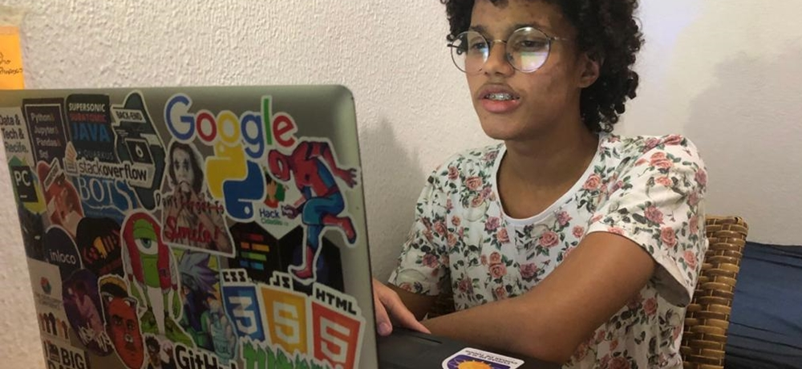

Sobre mim

Hello World, para quem não me conhece, me chamo Luis Vinicius, também conhecido como Tito e tenho 19 anos. Apesar de sempre admirar a área de tecnologia, meu interesse pela área se intesificou em 2016 quando almejei trabalhar na Riot Games, empresa criadora do League of Legends, após ver um vídeo no YouTube sobre a empresa e seus funcionarios. Isso em meu primeiro ano do ensino médio, onde os meus questionamentos sobre o que iria cursar ainda estavam bem confusos. No ano de 2018 conclui o ensino médio e já tinha decidido que realmente queria seguir na área da tecnologia, então em 2019 fui aprovado no vestibular para o curso de Gestão da Informação da Universidade Federal de Pernambuco.
No curso, são vistos aspectos tanto da tecnologia, como também da área de negócios e da ciência de informação, tornando-se um curso interdisciplinar, foi nesse mesmo ano de 2019 que me despertou o interesse na área da Ciência de dados, onde desde junho do mesmo ano venho trilhando os caminhos para me tornar um bom profissional na área e ingressar no mercado de trabalho. Ainda tenho muito o que aprender, porém, já compartilho meus conhecimentos adiquiridos através do LinkedIn e já realizei algumas palestras com o unico objetivo de compartilhar conhecimento sobre ciência de dados e tecnologia.